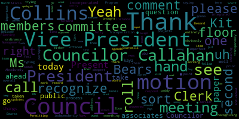
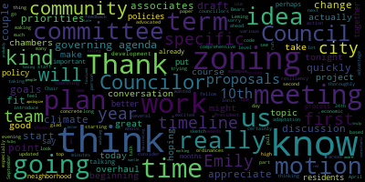
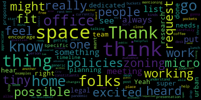

[Leming]: Welcome to the meeting of the Planning and Permitting Committee, March 13th, 2024. Clerk, can you please call the roll?
[Hurtubise]: Absolutely. Councilor Keohokalole. Vice President Collins. Present. Councilor Scarpelli. Present. President Ferris.
[Leming]: Present.
[Hurtubise]: Vice Chairman.
[Leming]: Present. The only item on our agenda today is paper 24-033 offered by President, Council President Bearss and Council Vice President Kit Collins, zoning ordinance updates with the, and his associates team. I'm gonna go ahead and recognize the chair, Kit Collins, who I am chairing this meeting in lieu of today. Kit, take it away.
[Collins]: Thank you so much, Councilor Leming, and thank you again for facilitating this meeting in the chambers. I apologize that I can't be there in person today. Thank you for taking up the mantle of calling on people in person. I truly appreciate it. So just to quickly introduce the topic before us. This is an exciting day. This is a red letter day, actually. This is our first committee meeting about the zoning paper, which I think as most folks here and probably watching are aware, this is something that the Council has advocated for and advocated for funding for over the course of several terms now. Late last term, we finalized the zoning consultants that we've been working with longitudinally for this zoning overhaul reconfiguration project, Emily Innis and associates. So just to quickly run through, you know, a draft agenda for this meeting. I'm hoping to give Emily and her team a chance to introduce themselves to the committee for the first time. I'm hoping that we can get into kind of an overview of the zoning overhaul that's before us, run over a kind of draft list of our top issues. And of course, we have a lot of fertile ground to pull from our comprehensive plan, our housing production plan, our climate action adaptation plan, all of these really thoroughly Thoroughly developed, you know, plans that have come out of years of community outreach across various departments of the city that will be really great fodder for the work that we're going to do in the council in terms of making those priorities those goals manifest in an updated zoning code and updated zoning map. But the work before us is to take those lofty goals and see how we can break them into themes, into coherent themes, into bite-sized chunks, and then to figure out a timeline so that we can get through as much of that work as possible in this term. So after we hear an introduction from Emily Innis and associates, I'm hoping that we can, as a council, start to have that conversation about taking those shared priorities, grouping them into categories, and beginning a conversation about what from our current governing agenda or other priorities fit into the scope of zoning and beginning to sketch out the timeline through which we might approach this work this term. But first, I'll pass it off to Emily and her team.
[Emily Innes]: Thank you so much. Thank you so much and thank you all Councilors for having us join you in this process. We are very excited to be working with you. I was part of the comprehensive planning process and since then with agency landscape and planning and since then I've added a few people to my team who are going to be helping us and with your permission, I'd like to share my screen so I can introduce the team and some of the topics that we're discussing today. So I will get that moving now. make sure I can see you all as well. So hopefully you can see the screen. What we would like to do is introduce the team to you. And we've got two sets, the project team that you're going to be working with directly. We are all except Jonathan on the call. So I'd like to introduce Paula Ramos Martinez, who is our newest senior urban designer planner. So new that she doesn't have the requisite brick background behind her yet. And Jimmy Rocha, who is our spatial analyst and data scientist, one of the two data scientists on the team, is also a resident of Medford. So we're excited to have him on board as well. You can see that we've got a support team behind us as well, three other people and a fourth joining us soon. You may see their names as we move through the project, but it's going to be Paula, Jemmy, and myself that you see most often. In addition to the NS Associates team, we also have Jonathan Silverstein from Blattman, Verbrowski, Haberdee, and Silverstein. We wanted to make sure that we had legal review of the zoning. As you all know, once it's in the ordinance, it has the effect of law. It is law. We wanted to make sure that we had that legal eye on it. And certainly, Mr. Borowsky's work on the recodification obviously set the stage for some of the work that we're going to be working with you on this project. As Councilor Collins said, we certainly have other documents to pull from the comprehensive plan itself, the client action adaptation plan and the housing production plan, as well as other planning efforts that you have done over the years. So it is exciting to be able to pull these together into something that will have an impact. I'm going to break down for you the timeline and sort of the high-level components of what we need to accomplish over the next year and a bit, basically. And as I do this, I'm going to make some suggestions about how we can chunk these into different pieces. These are only suggestions. I think our team is really hoping to hear from you today, see if some of these make sense. If you have different order and priorities, we'll take notes of that. So this just gets us started. We are looking at two fiscal years in terms of the contract and therefore the funding. So we'd like to accomplish a certain amount before June 30th, 2024, and then the remainder by June 30th, 2025. And the way that we've been thinking about this is an idea of what can we do before the end of this fiscal year and actually get it completed, or at least the text completed, even if the full city council isn't voting on it until after June 30th. There are certain things that we'd like to begin now, but probably won't get completed until after June 30th. I've suggested we think in terms of quarters for some of these, just to help us keep on track as we start delving into them. Each individual piece will have its own timeline, its own piece of the timeline, but if you think of how we complete things in quarter, And then there's some things that are much longer term and are likely to begin post-June 30th. Some of them might be completed by December of this year. Some of them might take into June 30th and be completed by June 30th of next year. So, we started to break down and talking with Council President Bears and talking with Councilor Collins. Some of the overall tasks, some of these we addressed in our initial scope, some of these came out of the comprehensive plan, which started to lay out some different ways of tackling the zoning changes. In the comprehensive plan, we talked about grouping them by topic or by geography. I think the planning staff has already moved forward with considering, okay, there are some things that we know now need to be changed, smaller things like definitions, things that haven't quite worked out the way we thought they would post recodification. Also getting feedback from the Zoning Board of Appeals, the City Board, the Building Department as to what's working, what isn't working, may just be technical changes. And so we're thinking those, many of those may be a category A, they start now, they get finished by June 30th. We then talked about this idea that some of what you need to tackle are really citywide policies that come out of the Climate Adaptation Plan, that come out of thinking of housing production or housing affordability, and critically, that come out of thinking about economic development and business growth, which is certainly something that we saw was of importance in the Comprehensive Plan as well. And from there, once we have the overall city policies, starting to think about how those policies might have an impact on different areas of the city, the comprehensive plan thought about them in terms of squares and connecting quarters. There's also the neighborhood, the residential streets, those pieces that kind of are connected by those squares and those corridors. And when we think about zoning, we think about what are the land uses? How do those clump together in terms of mapping out new districts or change districts? What are the dimensional requirements for each of those areas and how those work together? So those are the overall topics. We will be returning to this slide, but just to see how this might follow through with our timeline. So I was thinking, again, between now and June 30th, those small plates, those pieces of zoning that are easy to, we know they need to be changed. They're relatively easy to change. I just want to recognize Jonathan was able to join us. So Jonathan's the other member of our team. Breaking this down into by June 30th, what are the pieces that we can take to city council as a whole, have them easily adopted because there are components that just we know need to be changed, definitions, for example. And then start to bite off those citywide policies. So, get some of them maybe are done by June 30 of this year. Some of them might take into optimistically put September could be some longer term ones take to December. But as we're starting to. touch on those citywide policies one by one, we can start to now think of the area studies. And once the policies are in place, apply those to the area studies. So that's kind of how we would get from here to June 30 in terms of thinking of maybe those three bands of actions. And then in terms of what we need to do between now and June 30th, I've laid out the meetings that we have on our calendar for you for the next couple of months. Again, you may see a rotating version of the team, depending on who's talking about what. Or we may be giving you some homework for some meetings, but looking at two meetings a month, April, May, and June, starting with those conflicts with the zoning ordinances, things that need to get smoothed out. Then maybe starting with zoning policies I put for discussion, economic development and climate resiliency, certainly want to hear from you today. but starting to kind of flesh those out and see what those mean. And again, what's possible to sign off on before the end of this year and what's going to take into the next year. And so with that, just basically laying out the framework, I'm happy to maybe we pop back to the topics for a little bit, but happy to jump to any of the timelines as well, and want to turn it back over to you, Councilor Leming, to maybe see if there's any questions from all of you.
[Leming]: Absolutely recognize Council President Bears.
[Bears]: Thank you, Councilor Leming. Thank you, Emily. Thank you, Vice President Collins. Excuse me. I think this is a really great start. I think we have good buckets for all of the things that we want to talk about. I think a lot of the more specific policies that have come up. I'm looking at Councilor Callahan, some of the green score climate implementation. You know, we have climate resiliency discussion, Councilor Leming, the transportation demand, and some of the other things that Councilor Leming's put forward with transportation section. I think we're all really interested in, for the comprehensive plan, looking at major squares, connecting corridors, what our neighborhood residential streets. are looking at housing production plan goes into housing production, housing affordability. And then I think, you know, leading off with this, what I think in what is sometimes a, you know, we don't always have universal agreement on anything. I think the one thing we hear from everybody of every stripe is this economic development and business growth focus and wanting to see more commercial growth, more economic development, more business growth and building that up that part of the tax base. So I think really leading off with that discussion and making it clear that that is one of the pillars of this project and has been and continues to be one of the pillars of the work of this council. Is really great. I also think that the schedule is good. I think setting our goal of June 30th of next year is smart because I think we all know that things might take a little longer than that. And that gives us the 6 months at the end of the term. for those things that may inevitably take longer than this initial project plan. So I think it's a really good goal. I think we have this planning permitting committee meeting regularly, which gives us the venue. And I think we have a strong framework here of all of the issues that we want to tackle from the you know, fixes and implementation suggestions that have come from the zoning recodification that this council completed two years ago, and then all of the work that we want to do that uses that recodified zoning as a framework to make these policy and zoning changes. So I'm really excited for this project. I think this framework is really helpful. I think the timeline is really helpful, and I'm excited to work with my colleagues and the team and associates team to get it done, as well as our planning staff, building department staff, and the community. So thank you. I don't have any questions, but just wanted to put all that out there. I think this is a really strong start.
[Leming]: Thank you, Council President Bears. Do we have Councilor Callahan?
[Callahan]: Thank you. Yeah, super excited to be working on this and to have a team of people dedicated to all the research and legal and urban planning work that needs to be done to do this right. I'm excited to hear where specific policies that we have all proposed might fit into here, into the timeline. So I just want to encourage if it's possible and if this that fits into your presentation, feel free to drop in mentioning policies as examples of things that could go in there. I think it might also help folks who are in the audience, both on Zoom and here in person, to understand what kinds of things we mean with these more generic buckets that we're talking about. Thank you.
[Leming]: Thank you, Council Vice President. Did Ms. Ennis want to respond to that?
[Emily Innes]: No, actually, I'd like to hear all the questions first, and I'll be happy to respond.
[Leming]: Council Vice President Collins.
[Collins]: Thank you, Councilor Leming. Really appreciate this beginning to the discussion from my fellow councilors and, you know, in the, you know, roughly 40-45 minutes that we have here today, I think that one great use of our time might be to start, of course, you know, we're not going to do anything final tonight, but I think it could be a good use of our time to make this concrete for ourselves and also for residents to, you know, we can take a look at our governing agenda, we can pull out specific policies that councillors feel are priorities from the Climate Action and Adaptation Plan, from the Comprehensive Plan, and looking at that slide from Emily, we can start to say, okay, green score, this looks like it would fit into the For example, climate resiliency, citywide policy, and here's when we're thinking of starting that. Does that make sense for that particular policy? Does that fit there? Would it have a better fit there? I think we have a lot that we are trying to do by the end of June 2025. I think that's going to be here before we know it for all of us. And I think the more quickly we can get concrete about what we all consent to work on together, at what point in the year the better position we'll be in to accomplish our goals. So just as kind of an invitation to my fellow councillors, you know, for the time that we have together this evening, if there are specific policies from our governing agenda or new proposals on the brain, I think that we should feel free to voice those and put them on the record.
[Leming]: Thank you. Any more comment from members of the council? Any comment from members of the public?
[Bears]: Okay, seeing. Councilor Levee. Yep. I think it'd be great at this time if we could hear maybe from planning staff, maybe the building commissioner, just kind of hear your initial thoughts on what's been outlined.
[Leming]: Yep.
[Bears]: Or if you have questions, I want to give you space to chat. All right.
[Hunt]: Thank you, President Bears, and we refer to you as Chair Leming. None of the right titles this evening. So yeah, so we're excited to work on this. I think some members of the council know, but maybe not everybody is aware, the planning staff have been compiling lists of things that are inconsistent or unclear or unintended consequences. that we have been finding over the past year and a half in the city's zoning. And so we have provided that list to Emily and her team. And actually we have shared it with councillors, bears and Collins as well. We wanted to avoid any open meeting law of it. So we didn't want to share it with everybody because it's a document that we have been commenting on. We've also shared it with the mayor so that she could comment on it and be aware of what were the things that we were seeing. So when they talk about the first list, But I will share that some of those things are simple and some of them are language and some of them are unintended and just need to be fixed and cleaned up. But there are some other comments in there that we need to be thinking about when we look at the uses in our use table. There are a lot of interesting old uses in there, and some are very unclear. And a very easy off-the-cuff example is in terms of restaurants and food services, we have exactly two definitions, restaurants, and restaurants with drive-through. And actually, it's technically eating establishments and eating establishments with drive-through. And one might actually think about the fact that we might want to have different zones that would allow coffee shops and different rules for coffee shops, for restaurants, for fast food establishments, that there might be, in fact, some number of categories that we should have. For example, we have had people, there's a building that has come in front of the city that we've been encouraging ground floor commercial. And they said, well, we want to put an eating establishment in the first floor and a shop. And the reality is what they think and what members of the community have talked to me agree is that a coffee shop would be great in that location, but it might not be a great location for a full-blown restaurant. And we're like, yeah, no, we're all on the same page, but there is no way in our zoning to actually give them permission to have a coffee shop, but not a restaurant, for example. And that tool should be available, right? So there are a lot of things like that that are in our use table that we kind of need to look at what are the uses. There's also a big structural issue with Medford zoning. And to be clear, the use table and this structural issue I'm going to mention predate the recodification. These are not new issues that have been introduced. This is the way it's been for a very long time. You might think about communities and say, Well, in your downtown district, you would want like maybe a zero to five foot setback because you want your area to be walkable and you want the buildings very close to the sidewalk so that it's really very accessible right there. but that in your neighborhoods with houses, you want maybe 15 or 20 foot setback. Medford's not actually planned that way so that you say in this district, whatever it is, it's up against the sidewalk and in that area, whatever it is, it's setback. Our zoning is that if it's a single family house, these are the dimensions that apply. If it is a commercial building, these are the dimensions. If it's an industrial building, these are the dimensions. And it's regardless of where in the city they are, those dimensions apply. And it makes for this very disjointed community where if you have a house next to a commercial building, you might have a commercial building set forward and a house set far back. And if it's a tall building, the dimensions that we require, and I always get it wrong, but it's something like, height times width divided by length or something like that is the setback from the curb that is required. So the taller your building is, the further from the curb it needs to be set back. And that might have been a great idea in the 1960s. But today, we don't actually want our tall buildings surrounded by a sea of parking lots and open spaces. So these are some of the bigger structural issues that we're really interested in also working through. They're not necessarily the most sexy things, but they would make for better planning and better city design and layout. So those are some of the things that are listed, but we don't have all the solutions, right? We haven't listed all the uses that we'd like to see in the table, just that we need to evaluate the uses. And we haven't said which uses are allowed where. We've said we should evaluate which uses are allowed where, but not actually given our So those are some of the things that we need to hash out over the next couple of months. I assume we'll need to have some working sessions where we meet with the consultant, we talk offline, and then we'll bring stuff back to the public meetings. And to be clear, I think it's also helpful to make sure everybody understands the legal portion of the process. So in order to actually change the zoning, there has to be a couple of public hearings. And so these meetings will occur and we'll have some working meetings in our office. We'll have some meetings in the public here, but then in order for it to actually change the zoning, there must be the exact language has to be proposed. It has to come to the city council to be referred to the CD board. And that's actually an interesting question. It's the required referral. Could it just go straight to the CD board? But the CD board then has to, the community development board has to have a public hearing that would be publicly noticed. And then they have to make a recommendation to the city council, which has to have a public hearing that has to be publicly noticed. And it is at that time that the zoning would actually change. So I just want to make sure everybody's clear that there would be these required steps in public meetings in order to make any actual language changes. I kind of rambled a little. We do have our economic development director is very interested in this. He's not here tonight because he's at a Chevalier Commission meeting. We are working with the Donahue Institute, which is a quasi state agency out of UMass Amherst to look at some economic development studies. We have some funding to do some deep dives, particularly around the Wellington area and West Medford. So I'm hoping that we can coordinate that with this process to help facilitate some of the work that we want to do. And we have a climate zoning policy planner, who part of her grant funding is to help change, wait, did I say climate policy planner, but part of her grant funding is to help change zoning and policy in the city. to make it more green. So if anybody has the green things and they want to consult with professional staff, Brenda Pike on my staff, I think she may be on the Zoom tonight, but she is available to work on climate-related zoning topics. And there was a third one that I was going to mention. But anyhow, I just wanted to let you know, oh, Danielle Evans, our senior planner will be very involved, but we unfortunately had to schedule a community development board meeting tonight. So she is staffing that meeting while I'm here. So there's a lot of engagement and excitement from our office on it. And then Scott, our building commissioner is here if you want to have any say.
[Scott Vandewalle]: Good evening, I'm Scott van der Waals name I am the building commission in here about six weeks, but I have been deep into the zoning, because it's something we cannot escape on a daily basis down there with the staff. We're always having to understand it interpret read through it back and forth to understand this people come before us looking for. questions to be answered. And certainly we understand the minutiae of it, the enforcement of it. And we have started to develop our own list of things we'd like to have conversations about as well. So I look forward to doing this. I look forward to learning how we all put it together so I can best communicate it to my staff so they can ultimately explain it to the folks who come before us and everybody kind of understands, hey, where did it come from? What were we thinking when we got there? And here's how we have to do that. I look forward to it. I enjoy zoning. Many building commissioners don't. I spent 10 years doing zoning and enforcement for the community that I came from. And I was on a Danvers zoning board for four or five years prior to that. So I've got a lot of background in it from other communities. I look forward to bringing that to everything. And I just kind of enjoy zoning. So I welcome this opportunity to get into it, deep dive. and learn and hopefully offer some constructive arguments, plus, for, minus, against, whatever it is, and look forward to see what comes out on the end. So, thank you.
[Leming]: Thank you. Any questions, comments from my fellow, Councilor Callahan?
[Callahan]: I'm just gonna throw in one thing that I've heard from some constituents, and I think we should also think carefully about because it does seem like a post pandemic request, but folks who have been working from home would, folks that I've heard from would really appreciate having a mini office space that they could go to that's very close to their home. And I don't know if that's another thing we could think about as a possible zoning is having these micro pockets of, you know, tiny office space, like, you know, one of these spaces where you just rent a desk, tiny micro office space, coffee shop, lunch place, something like that, which would allow people to sort of start getting out of their homes who currently don't have to go to work. Thanks.
[Leming]: Thank you. I do have one question, which could either be answered by Scott or Alicia, or perhaps, and his associates. What do you think would be, how would sort of the projects that individual Councilors brought forward be incorporated into this? So for instance, I have some ADU things I'm working on, as well as the Transportation Demand Management Program in committee. Do you, how would you see that sort of being incorporated into this overall process? Are there some things that could be done independently or should it be sort of integrated into these meetings?
[Hunt]: Chair, so if I might, as I'm speaking off the cuff for the group, my thought is that if what you're interested in are items that clearly fit in zoning, right, so we have ADUs in zoning and you want to change what's in there, I haven't run this by Emily, but what I'm thinking is that we should shuttle things through the staff. So you should send me a note explaining what you want. I pass that on to Emily, or the little sub team of us that's looking at it. And then somebody from her team would actually talk to you directly and work through to try and understand what it is and how it could fit into everything. But that we would use city staff as sort of the, gateway introduction to that, if that makes sense. And then we would be maintaining a list of what are all the different things that are going on.
[Bears]: Council President Bears. Thank you, yeah, and if I could just, I think we, and I think we're gonna make a few motions to this, or I'm gonna make a few motions to this effect once we've had discussion, but. I think like pretty much what Alicia just said is right. And I think it's like, let's take these buckets and say, you know, there's a lot of people we need to get input from a city team, council, you know, ZBA, people on different commissions. Let's have people communicate back through Daniel and Alicia. Like if there are, I know that for example, Councilor Callahan, you have some climate plan implementation items that you wanna work on. You have some things outside of the climate plan related to climate that you're interested in that are related to zoning. I think one of the motions that I'll make in a minute is that councilors submit, you know, within a couple of weeks to, and it doesn't mean that we can't come up with new things in the future, or if you think of something when we have the meetings, but submit like the different ideas that you think fall into one of the 10 or so buckets that were outlined earlier to the planning staff. And then as Alicia said, they can all be sorted. And I think similarly, I'm gonna make a motion to ask the building commissioner to have him and his team, as you're working through it every day, what's the list of specific issues that maybe the planning staff hasn't taken a look at yet or doesn't know about? Submit those to them and that can be added into the short, quick fix process. As well, I would like to personally send through the council, through the clerk, make a motion to send the same request to the zoning board and the community development board. I mean, I know that the staff of different departments works with those boards, but I think the members themselves may have some similar thoughts, especially around the quick fixes, but maybe in general around, you know, We don't permit a lot of ADUs right now, even though it's part of the zoning, or we run into constantly having appeals on these specific issues that don't really need to be appeals. So that's kind of, I think, how the process would be envisioned to work. So those discrete items would be incorporated, and then we could schedule out the meetings on those topics, go through. All right, we have on climate, we have a list of 14 things. And his associates team has been able to do some research on it. Here's the feedback, maybe even some draft language. We can then have the discussion here, comment, edit, and then eventually create zoning amendments out of each of those discrete items. And that's pretty much how we did, and correct me if I'm wrong, Alicia, how we worked with Mark Wabrowski on the recodification too. We took different major sections of the zoning ordinance. You know, we had a, talked about different pieces of it.
[Hunt]: So, right. And, but one of the, I guess there is some general structure that would remain the same anyhow, even if you completely rewrite a section. Cause some of what I, I should actually say that we welcome questions. One of the things we had talked about was doing, putting out a simple form to the community. that if people have things in zoning that they love, they should tell us what that is so we don't mess it up. And if they have things in zoning that's been their pet peeve that they always wanna see change, they should tell us because maybe there's a sore point out there that we haven't actually picked up on yet. I don't know, could be. I don't know everything. I have also mentioned this a couple of times to the zoning board and the planning board and encourage them to tell us what are things that they would like to see changed. And an example might be that if the zoning board often gets people coming to them for variances, We allow building homes that are two and a half stories, which means your third floor can meet half the square footage of your second floor, but people want to bump that out a little bit with some dormers, and they have to go to the zoning board. And so it may actually be that we want to allow two and three quarters, or we want to allow certain kinds of dormers. And it would dramatically cut back the number of people having to go to the zoning board to put a dormer on their house. So those are the kinds of suggestions that I would really like to see from the zoning board to like, what are the things that would cut down on things that they look at and say, well, of course we should say yes to this. It's completely reasonable and it's not gonna cause problem for anybody. I think there are bigger things that we need to have community kind of input and conversation on, like allowing two families in single family districts, stuff like that. Those are the controversial things that maybe we don't touch this time, but I want to hear from people. We get that actually at ZBA a lot, people who want to turn their single family into a two family. So I want to hear them so we know what the issues are. So I should have done it before now, we'll have somebody set up probably a Google form for people to just send us thoughts, not a big survey, just like two or three, two questions and give us your contact information if you want to ever hear back from us about it. And I'll probably, Anna, connect you with Brenda, the planning, the climate person. She also has a list of things that she wants to send over to us to send to Emily as well.
[Bears]: And if I could, Mr. Chair, just if I could just add, I think something really important to add here is a lot of these areas are coming out of and specifically drawn from extensive planning processes that have already occurred that had extensive public process, shredding, focus groups, public meetings, dozens of public meetings, many of which I was part of. For Medford Square, we have, as I think Councilor Scarpellino has mentioned, we have several plans over several decades at this point. So when we have a meeting on major squares, When we have a meeting on Medford Square, we can finally take those many, many plans that never amounted to anything and turn those into action and take the best pieces of those that exist and put them into action. So that's just something really important here too. we're taking, I think, the sum of a lot of great work that has been ongoing, that has been worked out. You know, Councilor Caraviello and I did a ton of time on the comprehensive plan, and there's very specific zoning recommendations coming out of the comprehensive plan, the housing production plan, the climate plan, especially, and the different bike plans and some of the other more local neighborhood-focused plans, but taking those and and. Turning them into zoning language, I think is a big piece of this. I just think it's important to put that out there, too. We're outlining an extensive public process with dozens of public meetings ahead of us in this committee in the public hearings in the council, the public meetings of the Community Development Board. Building on what I think it's probably fair to say is dozens, if not hundreds of public meetings over the past. and making it actionable. So this isn't like day one, you know, new idea coming out of nowhere. This is the culmination of extensive work engaging this community and designing the future that we all want to see. So I'm excited to do that work. And I just think it's important to outline all of that here at the start of this piece of the project, because it is not you know, it's just important to outline that now, that this is not just the start right now, today, day one, where we haven't had any conversations. There's been a ton of process that led up to this point and into what we are in my considering kind of a final phase of a very long project. And then, you know, I think maybe we should build something in here too that future councils reconsider and look at these items in the future, but so that we don't end up waiting having plans that sit on shelves for 20 years, or like we did with the zoning recodification with Mark Bobrowski, having it be the first time since the 60s that we actually looked at the structure of the ordinance, or having, you know, I was just reading through the zoning ordinance earlier today looking for some stuff. There's probably some provisions from 1925 in there, you know, from the first ever zoning map. And I think it's probably not many, but I just think adding that kind of future focus vision too, to say, this is, we've done a lot of process. This is what the community today thinks zoning should look like. Once again, you know, and certainly in 60 years, but my guess in 10 or 15 years, people might have some different ideas too. So I think, you know, that we've done. So. Putting this in the context of the work that we've done, and the work that will come ahead is just an important thing to do as we embark on this ambitious project. Thank you.
[Hunt]: And Mr. Chair, if I might, I just would like to mention that if people wanted to see a lot of these plans, so on the city's website, if you went to departments, planning, planning, many of the ones that we've referenced, and many, many plans about Medford Square. And if anybody feels as well as if you click open sustainability, there are several plans there. If anybody feels that we are missing plans that they can't find and would like to see on there, just email us. The easiest way to email my office is the letters OCD at medford-ma.gov. And that would go to, if you just, why isn't this plan on the website? Like that would get it up there. We'll add them.
[Leming]: Yeah, thank you. And I see that Ms. Inez had her hand up prior, put it down and then has her hand up again. So would you feel free to, yeah.
[Emily Innes]: Great, thank you so much. I just wanted to just touch on a couple of comments that came up first for Councilor Callahan, I think, who'd asked about the policies, specific policies. The segues nicely from what Alicia just mentioned. If you, for those of the maybe people who have been watching who are not familiar with the comprehensive plan, page 195 starts off the future land use and zoning section of the plan. It established a framework at the time for how this conversation might go about updating the zoning and what that would mean, and it draws at a very high level on the other planning processes, the climate, the housing work that had been done to date, in addition to what had come through the planning process for the comprehensive plan. and starts to highlight geographic areas, but also policy areas for City Council to consider. So we'll certainly be drawing on that, understanding that you all have had conversations, that we're having a conversation now, and that those conversations are going to continue through this process. To Council President Bears's point, this very much is a public process. There are some known things that are coming out of city work to date that has been part of a public process that can move forward, but it still has to go through the City Council's approval process, as Alicia mentioned. But there are other things, for example, when we get to the squares, when we get to the corridors, when we get to some of the city policies, that are going to require further public input and that is very much part of this planning process and this process of bringing forward new zoning for recommendation to City Council and potential approval, again, part of another public process. So, people should feel that throughout this they have a voice. We'll work with Alicia and her team to set up that Google form and check it regularly. I mentioned the idea of small bites at the beginning, but I would expect those to become peppered throughout the process as new things come forward during the conversation. So it's not that we're going to do all the small things by June 30th and they'll be done. Some of them will get done, some of them will get talked about perhaps but incorporated in other components. Maybe there's something that comes up that's not ready yet. We need more input. And that'll happen later in the process. So people who are listening in should look at this as the beginning of a long conversation. And they have time to get input in, time to think about things, and respond to questions we may be asking them. So thank you.
[Leming]: Thank you. Councilor Scarpelli, did you wanna speak? I didn't see your hand up, but you were saying something earlier.
[Scarpelli]: No, Councilor, thank you very much. I just made a smart comment with Councilor Bears about our Medford Square plans. But I do want to, I think that as we're moving through this process, now that I have the floor for a minute, I think what was important as we've seen, when you see these successful community impacts and sharing, I think that are we going to be putting forward uh, community based meetings where we're going from each area of the community to ask, ask for their input. I know that's something we talked about at the meetings. I think that that's something that when I talked to constituents and we talked about what they would like to see their, their, uh, community look like, I think it was important that we, um, we really tried to reach out and have more interactive meetings in their backyards. So I think that would be important as well.
[Leming]: Thank you, Vice President Collins.
[Collins]: Thank you, Chairwoman, I appreciate that. And I appreciate Councilor Scarpelli's note just now. I think as we get into the more neighborhood-based planning part of this process, certainly we should consider having some of these committee meetings perhaps located in the neighborhoods that they'll be affecting. I know that that used to be something that before my time on the Council, the Council would occasionally hold committees of the whole out in the real world, outside of the chambers. And I think that might be an appropriate thing to consider when we're doing neighborhood-specific zoning changes later in the year. But I just wanted to underscore a point that's already been made, but that I think is really important, is that we have so many ideas and high-level policies to go on that are already, you know, the result of these months and months and years of community meetings about what we want to see in the community and what the zoning is that could bring those about. Those ideas from community members, those proposals from residents and from business owners, those were not, the point of those ideas is not to live in a plan. The point of those ideas is to be put into our zoning ordinances so that our city can evolve to be more what we envision. And so I just say, I think it's important for us to go into this process and also for residents who are perhaps you know, rejoining this effort, you know, for the first time in several months or years to know that, you know, this is the intent of this Council is to take the will of the community that has been expressed in part through these plans that have already been published, you know, and do the good work of making sure that those are actually going to become a reality in our community through the changes that we're going to make. With just, you know, about 10 or 15 minutes left here, I know President Bears mentioned that he had a couple motions in mind, so I'll defer to him, but I think for me the most important thing, kind of pivoting to thinking about next steps, we have penciled in that we will revisit this topic again at a couple meetings in October, I'm sorry, in April on the 10th and the 24th. I think it would be really great progress, if starting on the 10th, we have a better idea of what those kind of smaller tweaks to change in the zoning ordinances are based on feedback from city staff, and I would especially support a motion to have Councilors submit their specific proposals, ideas from the governing agenda, from our various plans, new proposals to council leadership and the PBS team so that those can be compiled and we can review that as a team at our next committee meeting on this topic and move forward from there with the timeline.
[Leming]: Thank you. Do we have any motions from the floor? Council President Bears. Oh, Councilor Callahan.
[Callahan]: Thank you, I just had a question. It would be really helpful to be able to see the list of minor changes that have been requested from staff and from the Zoning Board, and what is our best way of doing that within open meeting law? Can we request that they send those to us in advance of a meeting and then make those public, or are they ready to do that? Is that something you feel like we're at a space where that would be useful for the City Council to see that list?
[Hunt]: Right, so it's just that it's messy and it has like commentary on it. So I have no problem with the councilors seeing it. I wouldn't use that list in that version in a public meeting. There's actually in fact a few things that we've been using it for a while. So some of the changes that were adopted last September are still in there that we need to make sure. I was hesitant to mark them off without actually having somebody do a side-by-side comparison and make sure we caught them, that we were right as we were knocking them off. I think sending them the list to the Councilors, and then if they want to bring comments to a public meeting makes complete sense within public meeting law. It's just that if you were to comment on the document, then that would be circumventing public meeting law, right? Like if you were to put your comments in a shared document, that's not allowed.
[Bears]: So I think if you could just download it, if you could download a copy and circulate it. Great. You'd send it to the clerk to circulate.
[Hunt]: Sure.
[Bears]: That would be great.
[Hunt]: Thank you. Yeah. I think I may remove the whole section on definitions because I am, I just want to double check. I think we've got all those definitions reinsert correctly now. Because it's like three pages of actually already done. So I don't want to bother you with things that are done.
[Bears]: Yeah, we did a big, big chunk at the end of the year.
[Leming]: Uh, do we have any motions from floor just if I could?
[Bears]: I have a couple of things. So first, um, just I want to double down on what Councilor Scarpelli and Councilor Collins were saying. And I think that Emily was saying as well around the community meetings. I think when we talk about the major squares and corridors, I think it'd be great, not just to have necessarily planning permitting, but also just to have, you know, community meetings, a South Medford meeting, a West Medford meeting, a Hayden Square meeting, a Medford Square meeting, a Wellington meeting to talk about the major squares and the connecting corridors and neighborhood issues as we get more into that piece of the project that's about the neighborhood and district. that's what I'm really was saying as well in terms of the public engagement community process, so I think 100% that idea is going to be. Part of what we do, and then we can take that additional feedback and incorporated into the work that we've already, you know. Have coming out of the comprehensive plan, so I think those are going to be, um. Great meetings to have and an informal session, which I know we all are doing all the time outside of these meetings that happen in this room. I know we're all out in the community, but we have occasionally been able to have on-site meetings, which is always fun, except when it's raining, then it's not so much fun. In terms of motions, I think my first motion would be to request feedback from the building commissioner, the chair of the Zoning Board of Appeals and the chair of the Community Development Board on issues that they are seeing with the zoning ordinance that they would like to see amended. And to have that by April 5th. and then we can have that for our April 10th meeting.
[Leming]: So is that all in one motion? Yeah. OK. And while the clerk is typing that out, I see that we have, I'd like recognizing, I see that we have a paddy kaya on Zoom. Is that our hand up for a while? So just I'll just go ahead and recognize her name and address for the record.
[Patty Caya]: Hi, this is Patty Kaya, 1 Monument Street. And as a member of the public observing what is likely to be a quite document-intensive process, I would like to be here to advocate for the council and the consultants to also keep in mind the ease of consumption is critical to facilitating public participation. So I realize there's a balance to be struck between what's legal in a municipal environment and what's ideal in the real world. So I'm a professional editor. So I think in terms of, oh, if I'm interested in what are you going to update for ADUs or two-family dwellings, I want to see a redlined version so that I can understand very quickly without having to reference multiple documents What was the old language? What's the proposed new language? So that if I, as a member of the public, want to weigh in, I can easily weigh in and have my voice heard. So all I'm here to say is I hope that that will be kept in high regard as you continue with this planning process, that a lot of people will participate if they're given an opportunity through ease of access and not having to reference what you as a group, obviously you're doing the heavy lifting and I appreciate the effort that's required, but members of the public are more likely to contribute if we facilitate ease. So I just hope that you keep that in high regard as you move forward. Thank you.
[Leming]: Thank you, Ms. Kaya. I fully agree transparency in this process is very important. We've been, this council has been trying to work on that for the entirety of the term. It's obviously imperfect, but point taken. Council Vice President Collins.
[Collins]: Thank you. I'll let President Bears complete his motions and then I'll jump in if I have any remaining after that.
[Bears]: Council President Bears. Thanks. I would like to, you know, and this would just be an initial list. We can come back and do it again, but also move to request that councilors submit any specific issues or policies they'd like to see included under the main topic areas as outlined by Emily Innis. And I think we should all, maybe we can also do that by April 5th. And I'm writing this out now, Mr. Clerk, I realize I should have thought of written these out in advance so that I could have sent you the language.
[Collins]: Chair Lemaine, I'll second these motions.
[Leming]: Do we have a second for that motion?
[Collins]: I'll second the motion.
[Leming]: I'm very sorry, Council Vice President. That second was already taken by Councilor Callahan here. My deepest apologies. Do we have any more motions on the floor?
[Bears]: I'm trying to think if, you know, it might be helpful. I don't know what Emily or Vice President Collins or Alicia, what you think about this. if we want to maybe pick a couple of those citywide policy areas to discuss on the 24th, like maybe we could start with the economic development and business growth and the climate resiliency on the 24th, and we can kind of just be prepared ahead of time that, you know, we'll start with these, the fixes on the 10th, and then we could do that on the 24th. I'm seeing some nodding heads, but I'm interested as well, those heads that I cannot see.
[Callahan]: do you think we can do both? Just timing wise. I think economic development and climate put them both on the 24th. I guess we can always, if we don't get them covered, we can always put them up.
[Bears]: Yeah, that's my thinking. I think maybe we could start both or, you know, I mean, again, one of the intents of this is that, you know, the six o'clock meeting can go longer than an hour. I think we've been planning these for an hour and I respect that, but really the intent was not to limit these to one hour meetings, I think. if it goes two hours, if it goes two and a half hours, then the second meeting starts late, and that's just how it's gonna be. Or if we expect it to be long, then we could ask the seven o'clock meeting to think about a reschedule, something like that. That's just my personal thought though.
[Leming]: Okay, was that a third motion?
[Bears]: That's up to Vice President Collins, honestly. Vice President Collins.
[Collins]: Thank you. I think it will advantage us to think ahead about what we're going to be talking about when, both in the short term and in the long term, kind of we've been talking long term tonight. But I think, I imagine it will be to the advantage of Finnis Associates, which is doing most of the research and homework and prep for these meetings, if we came out ahead of time, what we at least intend to work on, even if there's a couple of options, we know that we're going to get to all of it eventually. I think, especially with these couple of motions on the table, that puts us in good shape to have a more granular discussion on the 10th about what we aspire to work on when, and to have a more specific conversation about, for example, what do we mean when we say we're going to work on commercial development before September 2024? What's involved in that? What framework governing agenda is on that? What areas of the city are we talking about? I think that that'll be a really productive discussion. And I think with everything that we're trying to get done before September, We should, we should continue quickly to actually getting into the weeds on those policy areas. So I wonder if, you know, doing all of this work, requesting all this feedback from city staff and Councilors submitting ideas for inclusion on this draft timeline. in time for our April 10th meeting. Jumping off of the discussion that we've had today, which has been pretty high level, I think that we could be ambitious and try to touch both on draft timeline and then start to get into the weeds on economic development on the 10th. If we don't get to it, then we can plan to talk about economic development and some climate resiliency goals on the 24th, and perhaps sketch out the top lines for our May meetings as well.
[Bears]: Thank you. Uh, let's tell you that's not a motion or just leave it as an idea.
[Leming]: Yeah. All right. Well, we still have two motions to be voted on. So, uh, or can you, uh, read up the first one and then we'll take roll call vote.
[Hurtubise]: President Bears moved to request feedback from the building commissioner at the CBA chair and the CDB chair on issues. They're see they're seeing with the zoning ordinance would like to see amended and to get this feedback by April 5th for the April 10th meeting. There's a second from Councilor Callahan on that. All right. Clerk, please call the roll. Councilor Callahan? Yes. Vice President Collins? Yes. Councilor Scarpelli? Yes. President Bears? Yes. Chair Leming?
[Callahan]: Yes.
[Hurtubise]: Clerk, would you be able to read out the second motion? Second motion. Vice President Bears is going to have councilors submit topic areas that they would like to see covered by Ms. Innes, and also to have that information by April 5th for the April 10th meeting. And that's a second for Councilor Callahan on that.
[Leming]: Thank you. Would you please call the roll?
[Hurtubise]: I'm sorry. I've got one typo here that I need to fix.
[Bears]: I actually have a kind of a slightly same intent, slightly different wording. I'll email it to you.
[Hurtubise]: You can just read it to me right now if you want.
[Bears]: I'll email it to you anyway, but it's just motion to request that councillors on both of its motion requests, the commissioner, chair of the zoning board, chair of the community development board, submit comments on the issues they're seeing with the zoning ordinance and any proposed amendments by Friday, April 5th. And then the other one is motion to request that councillors submit specific policy issues. They would like to see addressed under each major topic area for the zoning project included in the presentation by Innes Associates by Friday, April 5th. And I think both of these should be that these should be submitted to Director Hunt and Vice President Collins.
[Hurtubise]: Great. If you email it to me, I'll plug that into the committee report. I'll change what I have in here. Is there a second from Councilor Callahan on that? Please call the roll when you're ready. Councilor Callahan? Yes. Vice President Collins? Yes. Councilor Scarpelli? Yes. President Bears? Yes. Chair Lohmann?
[Leming]: Yes. Motion passes. All right, do we have any further input from members of the public? All right, seeing none, Vice President Collins.
[Collins]: Thank you, Chair Lehmann. With those motions behind us, I just wanted to thank Innes Associates, the whole team, for the first time joining us in committee to talk about the zoning revocation, sorry, the zoning overhaul. I'm like 2022 over here. As we've all stated, really excited to be continuing this project with you. I know we're going to spend many evenings in the chambers and on Zoom together, putting all of these ideas and proposals and changes into our zoning code. We are really glad to have you, speaking for myself, very glad to have you on board, excited to be doing this process with you. Thank you for your time tonight and your preparation. And thank you to my colleagues for coming prepared to kick off this project, which will certainly dominate the work of this committee this term. I would motion to keep the paper in committee and adjourn.
[Leming]: Second. On the motion of Vice President Collins to keep the paper in committee and adjourn, seconded by Councilor Callahan. Clerk, when you're ready, please call the roll.
[Collins]: Yes.
[Leming]: Yes. Meeting is adjourned. Thank you everyone for coming out tonight.
|
total time: 4.35 minutes total words: 559  |
total time: 9.21 minutes total words: 1714  |
total time: 14.1 minutes total words: 2518 |
total time: 2.37 minutes total words: 399  |
|
total time: 0.99 minutes total words: 157 |
|||
{kind=link}
{kind=link}
{kind=link}
{kind=link}
{kind=link}